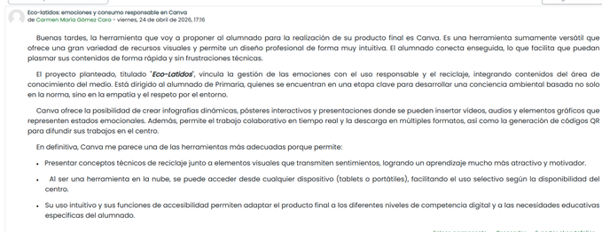

Ideas y herramientas
El alumnado diseñará en canva materiales visuales (infografías o pósteres) que integren la gestión emocional con el reciclaje y el consumo responsable. Se busca crear contenidos motivadores y atractivos que fomenten la conciencia ambiental mediante el uso de herramientas digitales intuitivas y el trabajo colaborativo.
